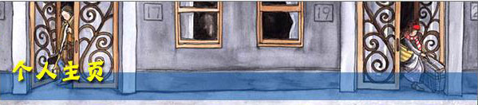

我的日记本
他们彼此深信是瞬间迸发的热情让他们相遇他们彼此深信是瞬间迸们彼此深信是瞬间迸发的热情让他们相遇

心情轨迹
董事长的一切都让人既羡慕又嫉妒董事长的一切都让人既羡慕又嫉妒董事长的一切都让人既羡慕又嫉妒
介绍
我努力地抓紧世界,最后却仍被世界淘汰,如果一开始就松手,我会不那么伤心吗?你说,亲爱的孩子,世事难料,随它去吧!
照相本子关于童年，你记住了什么?
两岁时，我拥有一只巨大的粉红猪，它总是在我嚎啕大哭时逗我笑。
三岁时，我骑着小木马一路摇到外婆家，它不喝水也不吃草。
四岁时，我离家出走，在公车上睡着了，最后是太空超人送我回家。
我真的没骗你，我通通都记得，还有照片为证。
天使在地下铁的入口,
和我说再见的那一年,
我渐渐看不见了。
十五岁生日的那年秋天早晨,
窗外下着毛毛雨,
我喂好我的猫。
六点零五分,
我走进地下铁。
They're both convinced
that a sudden passion joined them.
Such certainth is beautiful,
but uncertainly is more beautiful still.